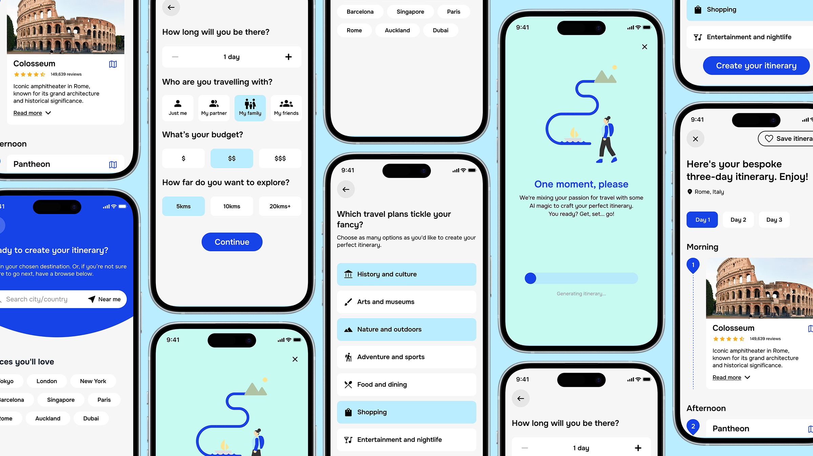
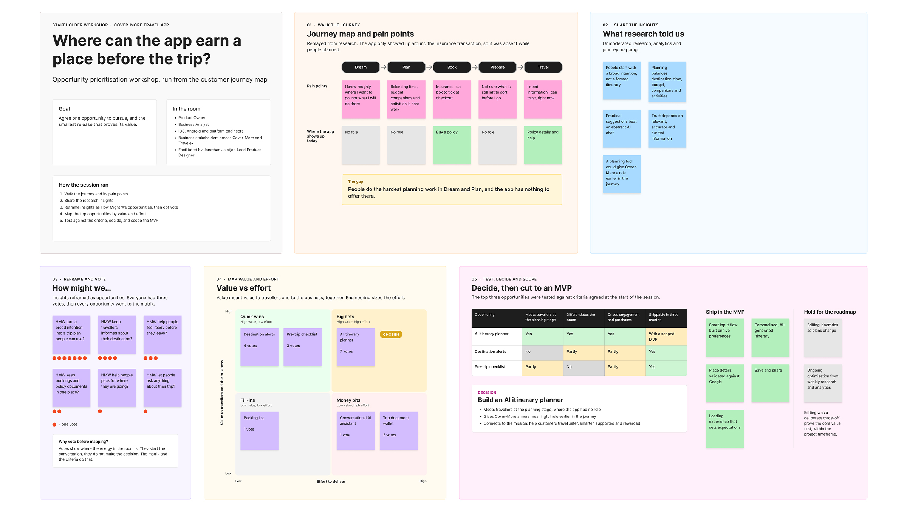
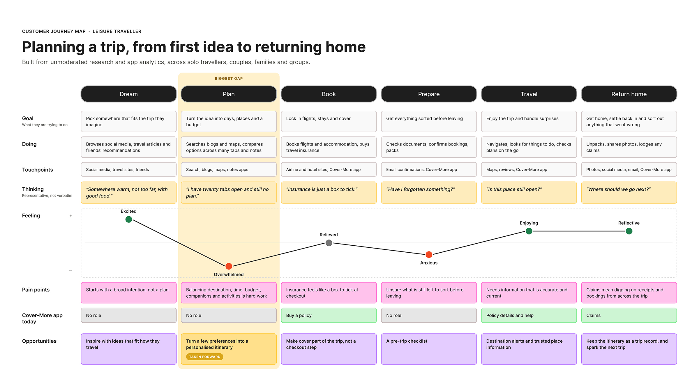
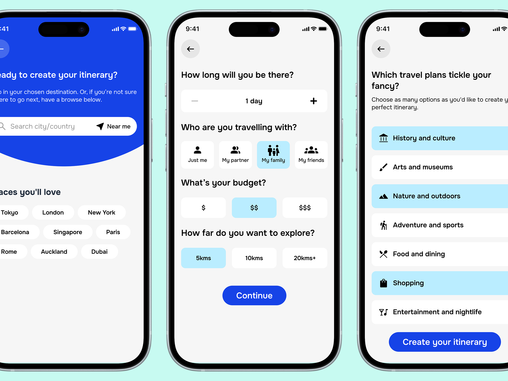
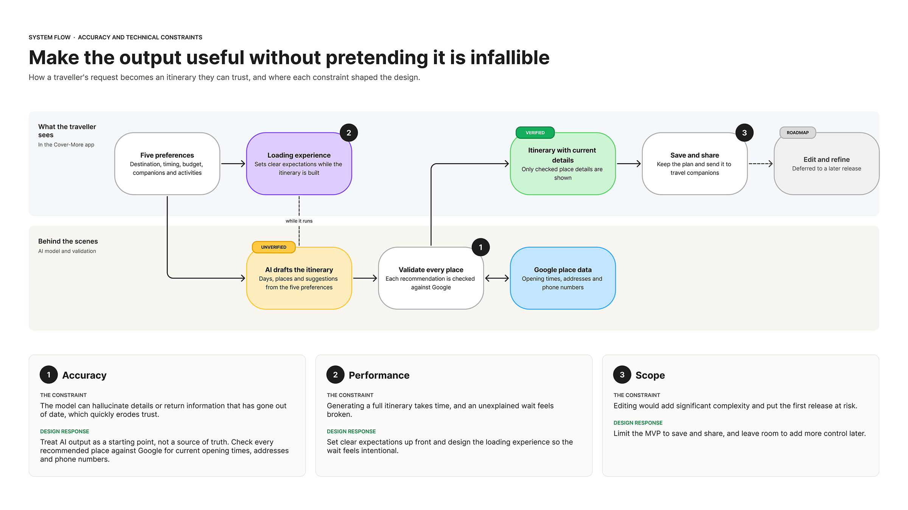

Timeline
2022-Present
Zurich Cover-More · Native leisure travel mobile app
The brief was open-ended, find where Cover-More's travel app could create real value for travellers earlier in their journey, while supporting a commercial goal. As Lead Product Designer, I took it from research and journey mapping through to a shipped AI itinerary planner, launched in August 2025.
The planner helped lift app engagement by 22% and supported a 16% uplift in completed insurance purchases.

Approach at a glance
01
Unmoderated qualitative research and analytics to understand how people prepare for travel.
02
Customer journey mapping to find where planning becomes difficult, and where the app could help.
03
Stakeholder workshops to converge on one opportunity and agree a scoped MVP.
04
Flows, sketches and prototypes, refined through usability validation.
05
Production-ready design, handover and delivery support alongside iOS, Android, platform and quality engineers.
06
Weekly research and analytics reviews feeding post-launch optimisation.
The problem
Travellers do not naturally think in policies, cover tiers, or internal product structures. They think about where they want to go, how long they will stay, who they are travelling with, and what kind of experience they want to have. The app, however, was organised mainly around the insurance transaction.
The opportunity was to shift it from a transactional insurance utility into a more helpful travel companion. That meant balancing two sets of needs at once.
The starting point was ambiguous. There was no defined feature to build, only a question about where the app could earn a meaningful place in the customer's journey.
Different user needs
Research separated out different traveller types, such as solo travellers, couples, families and groups. They share the same broad task, but weigh destination, time, budget, travel companions and activities very differently.
That ruled out a one-size-fits-all itinerary. Instead, the design needed to capture a few meaningful preferences up front and personalise the output from them, so each type of traveller got a plan that reflected how they actually travel.
Alongside travellers, the work had to satisfy business stakeholders, each with their own priorities.
My role
I was the lead designer on the project and owned the UX/UI direction from discovery through to launch and post-launch optimisation.
The planner itself was delivered over a three-month project.
Research and journey mapping
The initial challenge was not simply to add an AI feature. It was to identify where the app could create meaningful value for travellers while also supporting the business. I combined several methods, each answering a different question.
Several themes shaped the direction.


Prioritising opportunities
I facilitated stakeholder workshops built around the journey maps. Working from the same picture of the traveller's journey, the group compared opportunities and converged on an itinerary planner. It met travellers at the planning stage, gave Cover-More a more meaningful role earlier in the journey, and connected to the mission to help customers travel safer, smarter, supported, and rewarded.
Flows, sketches, prototypes, and strategic narrative framing helped move conversations away from feature opinions and toward a clearer, evidence-led product direction.
We then separated what the first release had to prove from what could follow.
Editing was a deliberate trade-off. Travellers may want to adapt recommendations as their plans evolve, so it stayed on the roadmap while the first release proved the core value within the project timeframe.
Key design decision
The central decision was to make the experience feel like a practical trip-planning tool rather than a generic AI interaction. Rather than asking people to write a detailed prompt, the planner asks for a small number of meaningful preferences.
The AI uses those inputs to generate a personalised itinerary. Because the inputs map to how different traveller types actually plan, the same short flow works for a solo trip and a family holiday alike.
This reduced the effort needed to start planning, and helped users move from a broad travel intention to a structured itinerary in minutes. Saving and sharing gave the itinerary value beyond the immediate insurance transaction.

Accuracy and technical constraints
The biggest risk was the reliability of AI-generated information. The model could hallucinate details or return information that had become outdated, which would quickly erode customer trust.
I worked through these constraints with the engineering team, treating them as design problems rather than leaving them to the interface alone.

Testing and refining
Before launch, prototypes and usability validation let us refine the input flow and itinerary output before committing to build. After launch, I used qualitative feedback, analytics, and KPI tracking to understand whether the planner was creating real value.
The measurement framework tracked five signals.
Weekly research and analytics reviews created a repeatable loop between customer insight, design decisions, and delivery priorities. It kept the team focused on improvements that were not only more usable, but also more likely to support the wider product and commercial goals.
Outcomes
+22%
User engagement, following the introduction of the AI itinerary planner
+16%
Uplift in completed insurance purchases through evidence-led optimisation
Beyond the headline metrics, the project delivered a more useful travel-planning experience connected to Cover-More's insurance offering, and gave the team a repeatable measurement loop for future delivery.
Reflection
This project showed that an insurance product becomes more useful when it is designed around what people are trying to do, rather than around the structure of the system behind it. It also reinforced that AI should be part of a broader product experience, not the product itself.
These are the lessons I take into any complex product.
For me, the most valuable part of the work was not only shipping the planner. It was connecting customer research, product thinking, and commercial outcomes into a direction the team could keep building on.